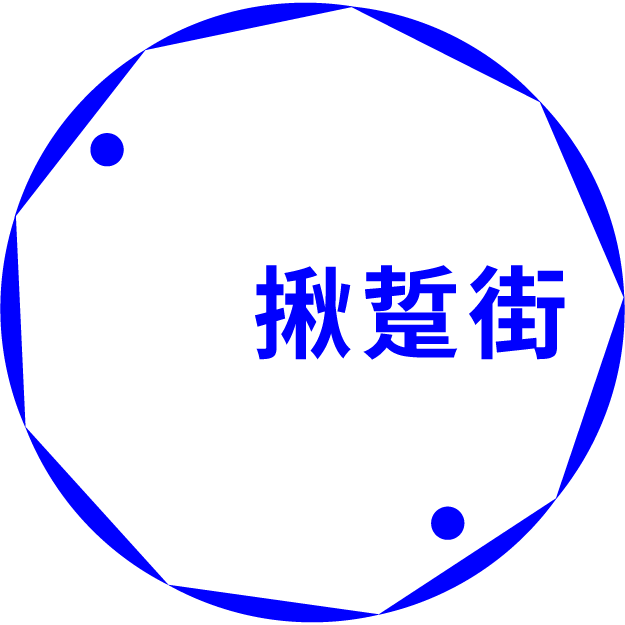
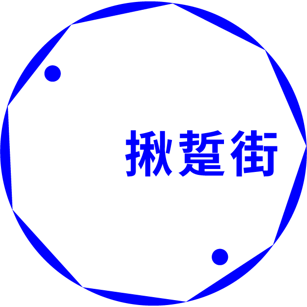

揪踅街 Roaming
二通圈生活節
老嘉義人口中的「二通」，指的是嘉義市的中正路，在日本時代大通（今嘉義市中山路）之外形成的二通，有著更多在地人生活的軌跡與產業世代更迭的故事。
嘉義市政府積極打造永續傳承的舊城文化，除了引進青年創業團隊創造新世代產業，同時進行老街微都更，支持在地店家形象再造，並規劃今年的端午假期 6 月 8 日至 10 日，舉辦第一屆「二通圈生活節」，串連響應更多的店家一起參與改變，共同「打開二通」。
 

以【傳承x美學x永續】三大精神為主軸，將新的美學、體驗方式傳承舊城深厚的底蘊，讓故事永續流傳，透過手作、戲劇、街區導覽等「新型態體驗」，將原在街區裡的歷史及文化進行重新包裝，讓民眾可以輕鬆愉快的深入二通生活、認識這條街區掀開舊城面紗，「圈」出嶄新的二通風貌！
並於 113 年 10 月 12 - 13 日、 10 月 19 - 20 日辦理「放大二通圈」，配合智慧科技處有事青年節活動以及本府各單位活動，共同響應光輝 10 月，本次活動也以推動「舊城創新生」計畫持續且永續地發展「二通圈」未來將在空間再生的同時，注入多元的設計、藝術元素，使得巷弄不再只是交通通道，更成為藝術表現的展延舞台。

而「二通圈」的舊城區再生不僅保存了建築及店家，同時也注重環保和綠意的實踐，持續延伸二通的在地力量，與商圈共好共榮。
| 主辦單位 ｜ | ｜ | 嘉義市政府建設處 |
|---|---|---|
| 承辦單位 ｜ | ｜ | 島內散步旅行社股份有限公司 |
| 暸解更多 ｜ | ｜ | 官方網站 |